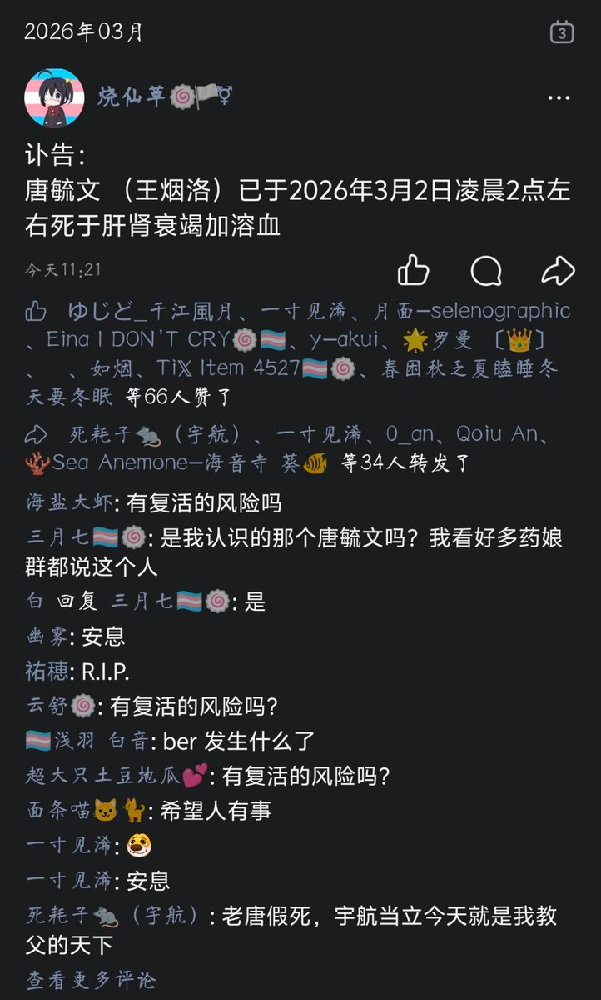
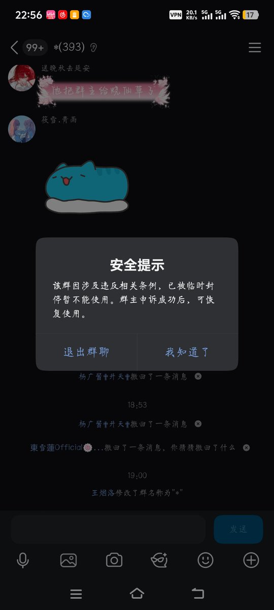

Cbscfe
@Cbscfe
@erciyuanha87431 Q群封掉或许有可能被改名


🐹宇航🐹（关爱药娘版🏳️⚧️🏳️🌈互Of）我❤️福瑞🌈）药圈教父🍥）人脉王🍥）
@erciyuanha87431
糖醋假死论证据第1点
烧仙草是在2026年3月2日中午12:21宣告了老唐的死亡
其内容为老唐在2026年3月2日上午凌晨2:00死于肾衰竭加溶血
而老唐的另一个群跨性别大纪元已被改名为《*》
改名时间为2026年3月2日下午19点
目前来看还不知道是警方的作为还是他父母改名
先排除他父母的可能
警方调查没必要改名 https://t.co/fM3gYasVI8